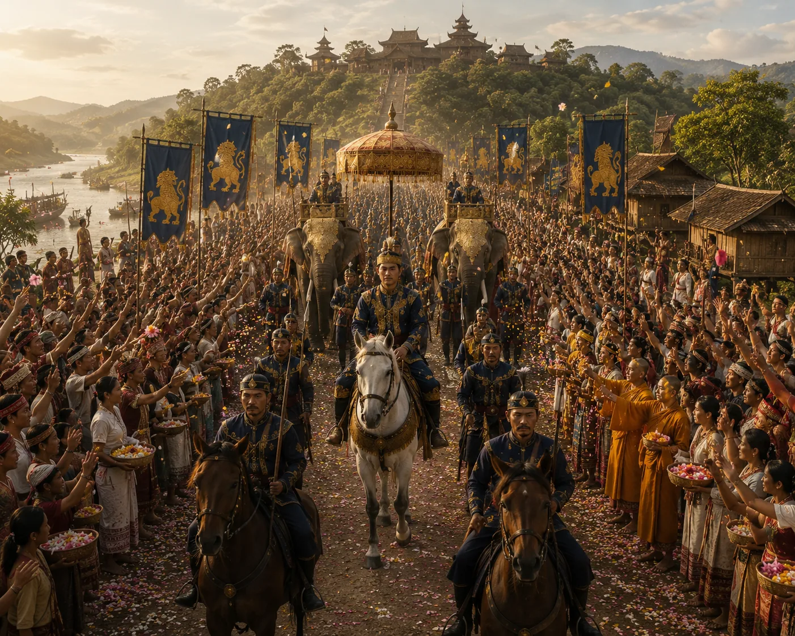

Triumphant Royal Return of Sudang to Charaideo
1397 · The coming of Sukaphaa

Prince Sudang is escorted in state barge flotillas up the Brahmaputra to Charaideo accompanied by his Brahmin foster-family.
Sources have not yet been catalogued for this record.
People: Sudangphaa (Bamuni Konwar)
Open this scene in the interactive archive · Follow this event on MAP